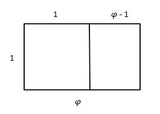
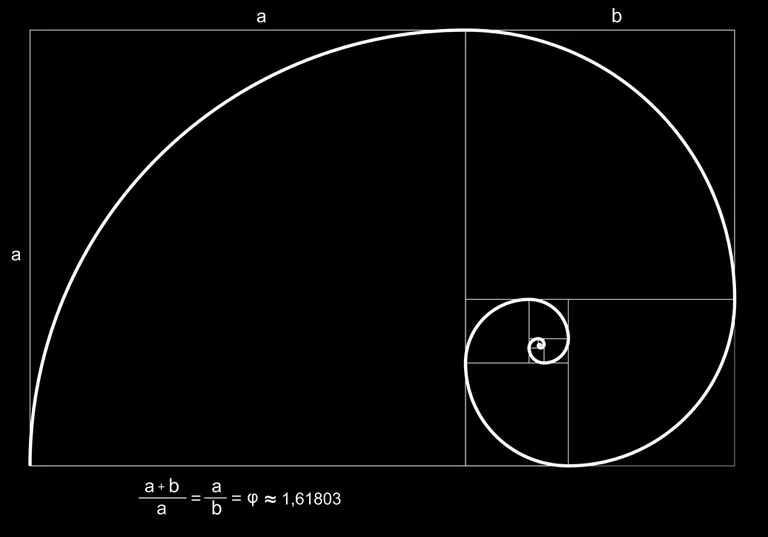

Introduction
Of all the important constants of mathematics, two of the most famous and most useful are the circle constant and the base of the natural logarithm, i.e. Euler's number A third, slightly lesser known constant (and my personal favorite number) is the golden ratio. I will attempt in what follows to provide a basic introduction to the golden ratio from the perspective of aesthetics.
Why is it called the golden ratio?
The name "golden ratio" comes from the number's role in aesthetics. The popular contention to make upon introducing the golden ratio is that this number is somehow optimal as an aspect ratio. That is, if you are an artist and you are making something rectangular, and you must decide how many times longer the length is than the width, then you should make the length exactly "the golden ratio times longer" in order to maximize the perceived visual pleasantness of your work.
What exactly "optimal" or "visual pleasantness" means here is at first unclear; obviously different conditions and different tastes will call for different aspect ratios. But there is a rigorous and simple mathematical proof that shows that the golden ratio has a certain property that no other number has, and which property is undeniably aesthetically pleasing.
Calculating the golden ratio
Suppose we draw a rectangle whose length-to-width ratio is some number
(Note: is the conventional
notation for the golden ratio).
Since we are only interested in their ratio and not the actual values of the width and length,
we can decide to make the width equal to 1. Then the length is equal to
Make a cut
(or "section") along the width of this rectangle, so that the portion cut off to the left side
forms a square. Then we must have cut at a distance 1 from the left side of the rectangle. This
means the remaining length is
See that new, smaller rectangle to the right of the square?
Wouldn't it be neat if the ratio of its length and width was also equal to

We can see clearly that the length of the small rectangle is 1 and its width is . In order for the two rectangles to have the same relative dimensions, must satisfy the equation
There is a unique positive number that satisfies this equation. We can find that number with a little algebra. You may notice that after multiplying both sides by the equation is quadratic. Thus the quadratic formula is the most advanced tool we need to find
The quadratic equation we must solve is Apply the quadratic formula to find that Since is a ratio of positive quantities, must itself be positive. Now since this means we must set
And there we have it! We found the value of the golden ratio, and the only calculation necessary was the solution of a quadratic equation. This makes easier to calculate than either or because neither nor is the root of any polynomial equation with integer coefficients. Our word for this in math is transcendental. Thus and are transcendental numbers: they cannot be expressed as roots of some polynomial equation (with integer coefficients). On the other hand, we say that is algebraic, because it can be expressed as a root of a polynomial equation. Every real number is either algebraic or transcendental, and the algebraic ones tend to be easier to study.
The logarithmic spiral
Remember the property we used to define We said that a rectangle whose length-to-width ratio is exactly can be cut into a square and another rectangle whose length-to-width ratio is again exactly equal to This gives the cut rectangle a kind of self-similarity. We could make a similar cut in the smaller rectangle to get a third, even smaller rectangle with the same relative dimensions. Then we could cut again, and again, and again...the golden ratio's precise value allows us to, in theory, keep making these cuts ad infinitum. This process gives rise to the famous logarithmic spiral image. 
Compare this to the spiral you may have seen on aircraft engines.

It's the same basic structure, although we see an opposite orientation on the aircraft engine (fanning out as we move clockwise rather than counterclockwise). In general, a logarithmic spiral is any spiral that fans out exponentially as it is spun around. In terms of polar coordinates, a logarithmic spiral is given by an equation of the form where can be any positive number other than 1. This is distinct from an Archimedean, or arithmetic, spiral. An Archimedean spiral fans out linearly as it is spun around. It is given by an equation of the form for some nonzero number The logarithmic spiral we described above is essentially .